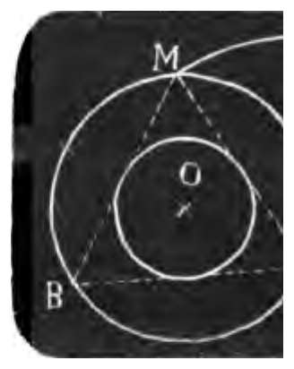
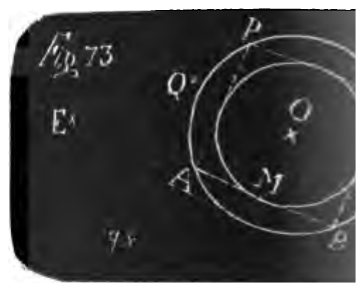
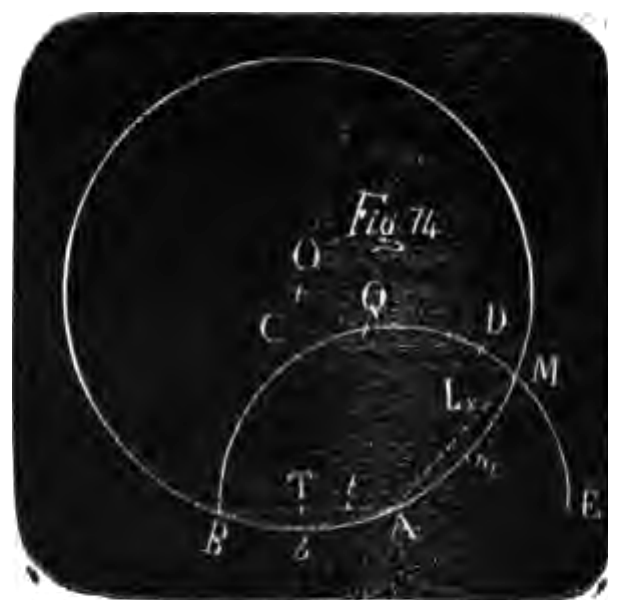

§§ 146–149: Cerchi circoscritti ed inscritti ai poligoni regolari (Fig. 72–74)¶
146. Prob. Ad un triangolo equilatero (fig. 72) dato circoscrivere ed inscrivere un cerchio.
Sol. Siano i vertici del triangolo dato \(A\), \(B\) ed \(M\). Col raggio \(AM\), e col centro \(A\) si segni l’arco \(MDE\), e si faccia ad \(AM = MD = DE\). Col raggio \(BD\) e coi centri \(B\) ed \(A\) si segnino due archi, che si taglino in \(L\). Collo stesso raggio \(LA\), e col centro \(L\) si tagli l’arco \(DE\) in \(Q\). Col raggio \(QE\), e con due vertici del triangolo, per esempio \(A\) e \(B\), presi per centri si segnino due archi, che si taglino in \(O\). Collo stesso raggio \(OA\), e col centro \(O\) si descriva un cerchio. Esso sarà circoscritto al triangolo.
Si divida per metà la \(QE\) in \(m\) (§ 66). Col raggio \(Qm\) e collo stesso centro \(O\) si descriva un altro cerchio. Esso sarà inscritto al triangolo.


Dim. Dalla dimostrazione del § 143 risulta essere anche la \(QE\) terza proporzionale alle due \(EM\), \(EA\), essendo anche la \(BAE\) una retta. Sarà dunque la \(QE\) raggio d’un cerchio, che passa pei tre punti \(M\), \(A\), \(B\); e sarà \(O\) il centro (§ 144).
Nella figura 59, nella quale il cerchio \(DBd\) è inscritto al triangolo \(NLM\), avendosi la \(AD\) perpendicolare ad \(LD\), e la \(NL\) ad \(LB\) (§ 131), i triangoli rettangoli \(NDA\), \(NBL\), che hanno un angolo comune in \(N\), hanno anche il terzo angolo eguale (32, lib. I); quindi si ha la proporzione (4, lib. VI) \(NL : LB :: NA : DA\). Ma \(NL\) è doppia di \(LB\); dunque anche \(NA\) è doppia di \(DA\), cioè il raggio del cerchio circoscritto al triangolo equilatero è doppio del raggio del cerchio inscritto. Dunque ecc.
147. Prob. Ad un quadrato dato circoscrivere ed inscrivere un cerchio (fig. 73). Sol. Sieno i quattro vertici dati del quadrato \(A\), \(B\), \(T\), \(P\). Si faccia ad \(AB = AE\). Ad \(PB = PE\). Collo stesso raggio \(BP\), e col centro \(B\) si segni un arco, che passi per \(Q\) e \(q\). Col centro \(E\), e col raggio \(EA\) si tagli quest’arco in \(Q\) e \(q\). Collo stesso raggio \(AE\), e coi centri \(Q\) e \(q\) si segnino due archi, che si taglino in \(M\). Col raggio \(AQ\), e coi centri \(A\) e \(B\) si segnino due archi, che si taglino in \(O\). Collo stesso raggio \(OB\), e col centro \(O\) si descriva un cerchio. Esso sarà circoscritto al quadrato. Collo stesso centro \(O\), e col raggio \(OM\) si descriva un altro cerchio. Esso sarà inscritto al quadrato.


Dim. Se per brevità si suppone \(AB = 1\), si avrà \(AQ = \frac{1}{2}\sqrt{2}\) (§ 104) \(= AO = BO\). Sarà dunque \((AO)^2 + (BO)^2 = 1 = (AB)^2\). Quindi sarà retto l’angolo \(BOA\) (48, lib. I), e semiretti gli angoli \(OAB\), \(OBA\) (5 e 32, lib. I). Essendo poi retto l’angolo \(BAP\) del quadrato, sarà semiretto l’angolo \(OAP\). Dunque nei due triangoli \(BAO\), \(PAO\) si avrà un angolo eguale compreso fra lati eguali tra loro. Quindi sarà anche \(OB = OP\) (4, lib. I). Nella stessa maniera si dimostra essere anche \(OB = OT\). Dunque il cerchio \(ABTP\) è circoscritto al quadrato.
La \(OM\) è perpendicolare alla \(MA\) (§ 83).
f. 0110 · p. 85Dunque la \(BA\) sarà tangente al cerchio descritto col raggio \(OM\). Lo stesso si dimostra degli altri lati \(AP\), \(PT\), \(TB\). Dunque il cerchio descritto col raggio \(OM\), e col centro \(O\) è inscritto al quadrato.
148. Prob. Ad un qualunque poligono regolare (fig. 74) circoscrivere e inscrivere un cerchio.
Sieno \(B\), \(A\), \(M\) tre vertici di questo poligono regolare, dei quali quello di mezzo \(A\) è egualmente lontano dagli altri due \(B\) ed \(M\). Fatto centro in \(A\), col raggio \(AB\) si descriva la semicirconferenza \(BCDE\) (§ 64). Col raggio \(ME\), e coi centri \(A\) ed \(E\) si segnino due archi, che si taglino in \(L\). Col centro \(L\) e collo stesso raggio \(LA\) si tagli la semicirconferenza \(BCDE\) in \(Q\). La \(BQ\) sarà il raggio del cerchio circoscritto. E però presi per centri due vertici del poligono, per esempio \(B\) ed \(A\), e col raggio \(BQ\) segnati due archi, che si taglino in \(O\); sarà \(O\) il centro.
Se \(AB\) è un lato del poligono, si divida per metà in \(T\) (§ 66). Sarà \(OT\) il raggio del cerchio inscritto, che si descriverà col medesimo centro \(O\). Se fosse qualunque altro \(Ab\) uno de’ lati del poligono, si divida per metà \(Ab\) in \(t\). Sarà \(Ot\) il raggio del cerchio da inscriversi col medesimo centro.


Dim. Che \(O\) sia il centro del cerchio, che passa pei tre punti \(B\), \(A\), \(M\), risulta dalla dimostrazione del § 14 [§ 143]. Dunque è centro del cerchio circoscritto, poichè pei tre punti \(B\), \(A\), \(M\) non si può far passare che un cerchio (25, lib. III).
È poi \(OT\) perpendicolare alla \(TA\) (§ 83). Quindi la \(TA\) sarà tangente al cerchio descritto col raggio \(OT\), e col centro \(O\) (16, lib. I). Lo stesso si dimostra di tutti gli altri lati eguali ad \(AB\). Dunque questo cerchio è inscritto al poligono, che ha per lato \(AB\). Istessamente si dimostra, che il cerchio descritto col raggio \(Ot\), e col centro \(O\) è inscritto al poligono, che ha per lato \(Ab\).
f. 0111 · p. 86149. Se \(AB\) è lato del poligono, nel quale si vuole inscrivere il cerchio, ci saranno molte maniere di dividerlo per metà (§ 66). Pel quadrato abbiamo assegnato la più semplice (§ 147). Pel triangolo solo (§ 146) il raggio del cerchio inscritto è la metà del raggio del circoscritto. Nel solo quadrato è eguale alla metà del lato.